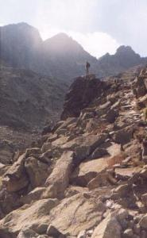

|
Dolina Staroleśna to ogromnie piękne miejsce, czego będziemy mieli okazję
doświadczyć wędrując nią. Kształty doliny uważane są za klasyczne przykłady form rzeźby
lodowcowej.
Musimy uważać na nosiczów, którzy zwłaszcza
w porze popołudniowego cienia podchodzą do Chaty Zbójnickiej z zaopatrzeniem.
Z kilkudziesięciokilogramowymi ładunkami trudno jest im manewrować, dlatego
należy ustępować im drogi i miejsca na głazach, na których siadają odpocząć.
Łagodnie wznoszącym się, szerokim szlakiem wychodzimy ze Staroleśnej Polany.
Idziemy przez piękny, wysoki las. Wkrótce pojawiają się limby i jarzębiny, a las
powoli ustępuje miejsca wysokiej kosodrzewinie. Ścieżka ułożona z kamieni
lawiruje pomiędzy płatami kosodrzewiny, kwiatami i głazami. Na dnie doliny pomiędzy
zielenią leżą bowiem imponujące, różnego kształtu i barwy głazy, czasem
wielkości małego domu. W bocznym oświetleniu popołudniowego słońca widać
wyraźnie bogate urzeźbienie tworzących ściany doliny skał, na których,
wysoko ponad nami, rośliny czepiają się najdrobniejszych poziomych półeczek
i szczelin. Życie w swoim szale rozrastania stara się zagarnąć każde miejsce,
gdzie tylko może przetrwać. Stąd kępy traw i kwiatów i drobnej kosówki,
a nawet nieduże limby i świerki, wyrastające w nielogiczny, nieprawdopodobny,
karkołomny sposob ze szczelin w pionowych skałach.
Mostek na potoku (wg mapy VKÚ 1557m) wyznacza nam dokładną
połowę odcinka Zbójnicka Chata-Hrebienok. Podchodzimy już stromiej porządnie
ułożoną ścieżką. Po chwili następuje krótki, nieco eksponowany
fragment ścieżki z ubezpieczeniami. Przekraczamy znów mostek na potoku, po
czym podchodzimy dość stromo po dobrze utrzymanych kamiennych stopniach.
Dochodzimy do malutkiego Warzęchowego Stawu (Vareškové Pleso, 1832m).
W tym miejscu ścieżka wiedzie skalną półką, ubezpieczoną łańcuchem,
choć raczej pro forma, gdyż expozycja jest tam symboliczna. Potem
szlak biegnie wdłuż brzegu pięknego Długiego Stawu (Dlhé Pleso, 1893m),
zasypywanego przez piargi. Po chwili dochodzimy do Zbójnickiej Chaty (1960m).
|
|  |
Dolina Staroleśna. Nad nią wznoszą się Baniasta Turnia, Mała Wysoka i Dzika Turnia
fot. Pacyfka
powiększenie zdjęcia |
|


{kind=link}
{kind=link}
{kind=link}
{kind=link}
{kind=link}
{kind=link}
{kind=link}
{kind=link}
{kind=link}